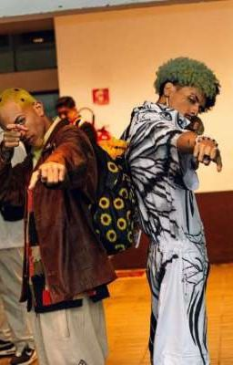

turma 2ano
<!DOCTYPE html>
<html lang="en">
<head>
    <meta charset="UTF-8">
    <meta name="viewport" content="width=device-width, initial-scale=1.0">
    <title>meu idolo</title>
</head>

</html>
    
 </body><h3>kauã e lucas, ambos são os dois melhores e mais conhecidos mcs de rima, são conhecidos por, em suas rimas espalharem amor.
     também palavras para outros mcs e até os propios fans, todos quem assite batalhas de rima conheçem o menino girrasol.</h3> 